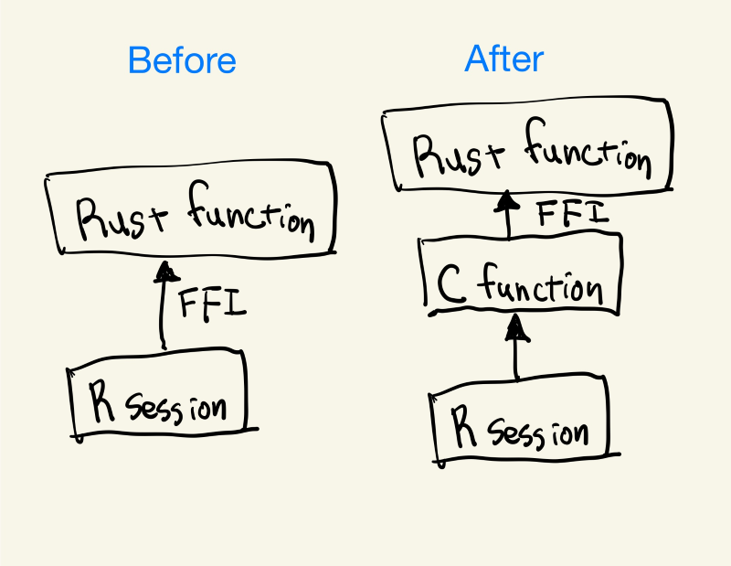
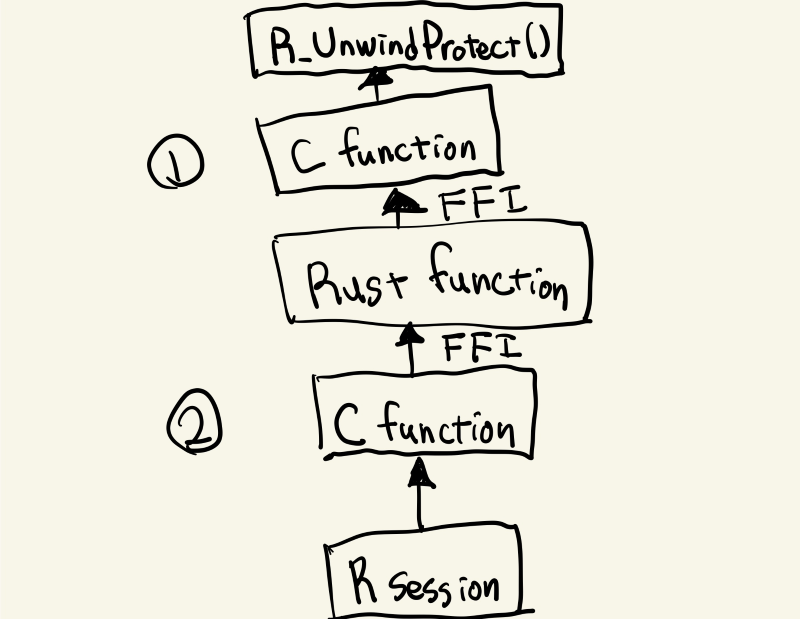

Three months ago, I wrote a blog post about R’s protection mechanism and stack unwinding. In the post, I said:
Rust doesn’t have
longjmp/setjmp(rust-lang/rfcs#2625), so the last resort ispanic!(). While we know it’s not good, there’s no option left as far as I know.
But, soon after I published this, Lionel Henry kindly told me that we have another option; it’s true that Rust doesn’t have longjmp, but we can write a C function that does longjmp and call the function from Rust.
Disclaimer: I still don’t have enough time to test these implementations, so please read carefully. I might be wrong.
What was the problem?
Let’s summarise the last blog post quickly. On error, the resources need to be freed before aborting. But, different languages have different error handling mechanism, and it might not work well to attempt to free resources beyond the language boundaries.
In order to solve this problem, R’s C API provices R_UnwindProtect(), which allows us to call a custom cleanup function before aborting. C++ can utilize this to delay R’s stack unwinding by escaping from it by longjmp and then resuming by another API, R_ContinueUnwind(). But, as Rust desn’t support longjmp, Rust cannot implement such a custom cleanup function. So, I concluded that, while it’s not totally safe, we have no choice but to use panic!() to escape from R_UnwindProtect().
However, I was wrong.
Overview
The basic idea is to write a C function that wraps R_UnwindProtect() and escapes by longjmp, and call it from Rust’s side. Rust then returns normally instead of aborting so that the Rust’s cleanup mechanism works. Returns what to what? The continuous token for R_ContinueUnwind() to the C’s side.
You might wonder what’s “the C’s side” mean, especially if you are familiar with extendr framework. Yes, Rust functions can be called directly from R via FFI if compiled so. However, to handle exceptions properly, we must use a C wrapper function to call R_ContinueUnwind().

One more thing that might be confusing is that we are going to write two C functions:
- C function to be called from Rust (i.e., a wrapper around
R_UnwindProtect()). - C function to be called from R session (i.e., a wrapper to inspect and handle the result from the Rust function)

Implementation
C function to be called from Rust
First, write a wrapper function of R_UnwindProtect(). The most of the code is derived from cpp11, so you can read cpp11 for the details.
#include <setjmp.h>
#include <stdint.h>
#include <Rinternals.h>
void not_so_long_jump(void *jmpbuf, Rboolean jump) {
if (jump == TRUE) {
longjmp(*(jmp_buf *)jmpbuf, 1);
}
}
SEXP unwind_protect_impl(SEXP (*fun)(void *data), void *data) {
SEXP token = R_MakeUnwindCont();
R_PreserveObject(token);
jmp_buf jmpbuf;
if (setjmp(jmpbuf)) {
// Tag the pointer
return (SEXP)((uintptr_t)token | 1);
}
SEXP res = R_UnwindProtect(fun, data, not_so_long_jump, &jmpbuf, token);
// Note: cpp11 says we need SETCAR(token, R_NilValue) here, but
// let's ignore it for now for simplicity.
return res;
}Tagged pointer
You might wonder what | 1 does. This is a trick called “tagged pointer”, using a few of the least significant bits to store additional information. This time, the implementation uses the lowest bit as an error flag. tagged pointer: https://en.wikipedia.org/wiki/Tagged_pointer
Of course, tagged pointer is not the only answer. For example, you can probably define a struct or enum to share the definition between Rust and C. But, I use tagged SEXP because it’s simpler in the sense it doesn’t require additional allocation.
Also note that I could just return Result here and create the tagged SEXP later. It’s just a matter of preferences.
build.rs
This C function needs to be compiled before compiling the Rust code because it’s needed at the linking stage. We can use cc crate to compile it in the build script like this:
use std::path::Path;
fn main() {
let r_include_dir =
std::env::var("R_INCLUDE_DIR").expect("R_INCLUDE_DIR envvar must be provided.");
cc::Build::new()
.file("src/unwind_protect_wrapper.c")
.include(Path::new(&r_include_dir))
.compile("unwind_protect");
println!("cargo:rerun-if-changed=src/unwind_protect_wrapper.c");
}Extern function definiton on Rust’s side
To let Rust call the function, we need an extern "C" function definiton on Rust’s side. Note that I’m not sure why the signature is this complex, but I just use the result of bindgen as it is.
use libR_sys::SEXP;
extern "C" {
fn unwind_protect_impl(
fun: ::std::option::Option<unsafe extern "C" fn(data: *mut ::std::os::raw::c_void) -> SEXP>,
data: *mut ::std::os::raw::c_void,
) -> SEXP;
}Rust function to call the C function
To actually call the above function from Rust code, we need an implementation like below to call unwind_protect(|| ...). This code is derived from extendr’s catch_r_error().
use libR_sys::SEXP;
#[derive(Debug)]
pub enum Error {
UnexpectedType(String),
Aborted(SEXP),
Unknown,
}
pub type Result<T> = std::result::Result<T, Error>;
pub unsafe fn unwind_protect<F>(f: F) -> Result<SEXP>
where
F: FnOnce() -> SEXP + Copy,
{
unsafe extern "C" fn do_call<F>(data: *mut std::os::raw::c_void) -> SEXP
where
F: FnOnce() -> SEXP + Copy,
{
let data = data as *const ();
let f: &F = &*(data as *const F);
f()
}
let fun_ptr = do_call::<F> as *const ();
let fun = std::mem::transmute(fun_ptr);
let data = std::mem::transmute(&f as *const F);
let res: SEXP = unwind_protect_impl(fun, data);
if (res as usize & 1) == 1 {
return Err(Error::Aborted(res));
}
Ok(res)
}Rust function to handle the result
I use this function to handle various types of errors. But, in this post, we only need to handle Aborted error, so this might be a bit overkill. Anyway, the important point is that we must return the same type of result (in this case, SEXP) to C’s side. Even when the actual function doesn’t have any return values, we have to return some value like the one filled with R_NilValue.
This is because the final error handling (e.g., raising an error by Rf_error(), and resuming the aborted unwinding by R_ContinueUnwind()) is done on C’s side in this design. No return value means there’s no way to know whether calling the Rust function succeeded or not.
pub fn handle_result(result: Result<SEXP>) -> SEXP {
match result {
Ok(res) => res,
Err(e) => match e {
// The token is already tagged, so pass it as it is.
Error::Aborted(token) => token,
// In other cases, return the error string with the tag
e => unsafe {
let msg = e.to_string();
let r_error = Rf_mkCharLenCE(
msg.as_ptr() as *const i8,
msg.len() as i32,
cetype_t_CE_UTF8,
);
// set the error flag
(r_error as usize | 1) as SEXP
},
},
}
}C function to handle the result
Let’s look at the C’s side then. Again, as I described above, I use a tagged SEXP to indicate the error, but you can use any data structure. The point here is that a wrapper function like this must be implemented to handle unwinding. To handle errors from Rust code, you can raise an error in the R wrapper function instead of C. But, R_ContinueUnwind() cannot be called from R code, so this has to be done at C-level.
static uintptr_t TAGGED_POINTER_MASK = (uintptr_t)1;
SEXP handle_result(SEXP res_) {
uintptr_t res = (uintptr_t)res_;
// An error is indicated by tag.
if ((res & TAGGED_POINTER_MASK) == 1) {
// Remove tag
SEXP res_aligned = (SEXP)(res & ~TAGGED_POINTER_MASK);
// Currently, there are two types of error cases:
//
// 1. Error from Rust code
// 2. Error from R's C API, which is caught by R_UnwindProtect()
//
if (TYPEOF(res_aligned) == CHARSXP) {
// In case 1, the result is an error message that can be passed to
// Rf_error() directly.
Rf_error("%s", CHAR(res_aligned));
} else {
// In case 2, the result is the token to restart the
// cleanup process on R's side.
R_ContinueUnwind(res_aligned);
}
}
return (SEXP)res;
}Example implementation
An example implementation can be found here: